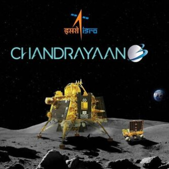
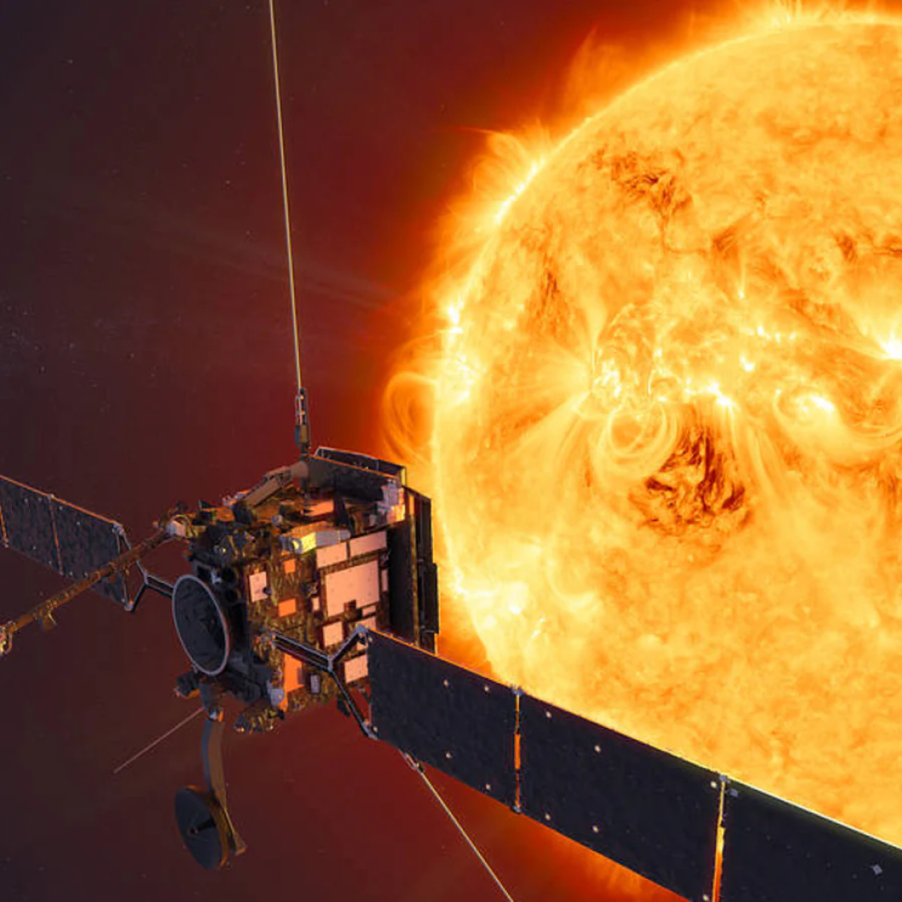
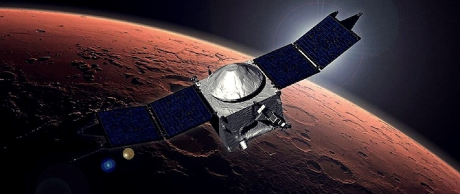

About
This is a Tribute-Page / Fan-Page of ISRO (Indian Space Research Organization), and not an official site.
This page is created to spread awareness regarding ISRO's accomplishments that made us feel proud.
This page is created by "Lakshya Singh" as a tribute to 'Indian Space Research Organization'.


